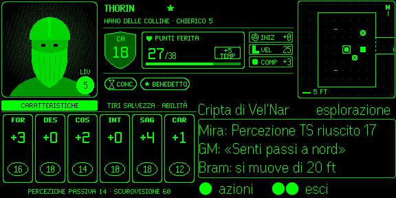
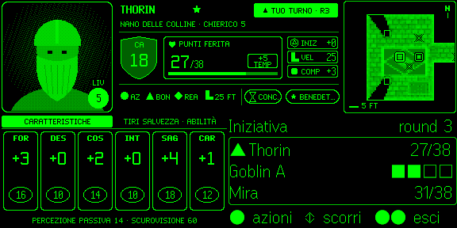
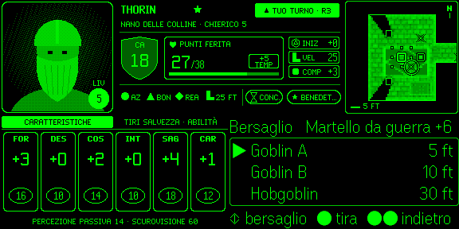
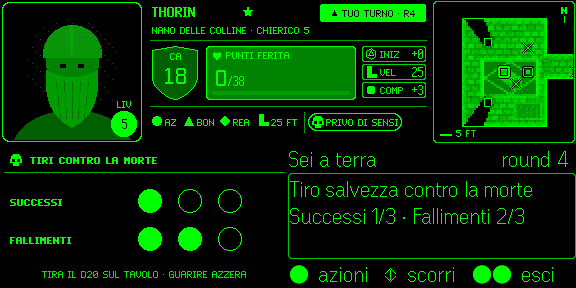

███████ ██ ██ ███████ ███ ██ ███████ ██████ ██ ██ ███ ██ ██████ ██████ ██ ██ ██ ██ ████████ ████████ ██ ██ ██ ██ ████ ██ ██ ██ ██ ██ ██ ████ ██ ██ ██ ██ ██ ██ ██ ██ ██ ╚══██╔══╝╚══██╔══╝ █████ ██ ██ █████ ██ ██ ██ █████ ██ ██ ██ ██ ██ ██ ██ ██ ██ ██████ ████ ██ ██ ██ ██ ██ ██ ██ ██ ██ ██ ██ ██ ██ ██ ██ ██ ██ ██ ██ ██ ██ ██ ██ ██ ╚██ ██╔╝ ██ ██ ███████ ████ ███████ ██ ████ ██ ██████ ██████ ██ ████ ██████ ██ ██ ██ ╚████╔╝ ██ ██
Project a glanceable HUD of your FoundryVTT D&D session onto Even Realities G2 AR glasses (576 × 288, 4-bit greyscale phosphor green), driven by tap / swipe / double-tap gestures from the Even R1 smart ring. Your own Foundry tab shows a QR, you scan it with the FoundryVTT G2 HUD app, and your character streams to the glasses through an end-to-end-sealed relay — no GM step, no server to run. Eyes on the table, not on a laptop.
Deterministic by design — every action is an explicit gesture → tool → Foundry. Nothing to host: your own Foundry tab is the projector.
Reads like the paper 5e sheet: portrait · AC shield and HP box · square map · ability and save pages · one context panel. Zone boundaries never move, so you learn where to look once.
R1 ring (ADR-0012): tap at the base view opens the actions menu, swipe moves the cursor, double-tap goes back (exit at root). Long-press opens a shortcuts menu as an extra — never the only path.
Every action goes through Activity#use() with all rules, hooks, MidiQOL, advantage / disadvantage. The DM keeps full veto power.
The player’s own Foundry tab shows the QR and becomes the projector; the phone never logs into Foundry. Phone and tab meet on an opaque relay that only sees AES-256-GCM sealed frames. No bridge, no Docker, no extra Foundry user.
Every PR, every audit, every release must satisfy them. They're constraints, not guidelines — ratified in §0.1 of the spec as the contract between today's design and tomorrow's implementation.
Formatting and layout are dynamic and always perfect. Frame corners, dividers and columns align to the character in every state — HP 7 / 70 / 700, names from 4ch to 16ch, Italian to English — never misaligned for any reason. Snapshot tests + Box/TextRun render contract.
Every technical claim cites a canonical upstream source — Even Hub docs and changelog, foundryvtt.com, dnd5e, the npm registry. Re-verified before each version bump and every GO/NO-GO gate. Drift is classified, fixed and logged.
Spec / README / showcase are always coherent and updated in the same commit for any cross-cutting change — version, fps target, phase count, hardware spec, locale set. No half-updated states. Cross-reference integrity is a hard gate.
Code is clean, optimized, documented — and zero dead or unreachable code tolerated. Biome + TS strict + Vitest coverage gate enforce in CI. // TODO without an issue/ADR link fails the build. JSDoc/TSDoc on every public API. Hot-path benchmarks gate regressions.
Every spec parameter below is cited from Even Realities and FoundryVTT documentation, last re-verified for v0.13.0 on 2026-09-25 against hub.evenrealities.com/docs (networking, FAQ, testing and submission pages) and the npm registry (SDK 0.0.16).
| Resolution | 576 × 288 px / eye |
|---|---|
| Color | 4-bit greyscale (16 levels green) |
| Containers | max 4 image + 8 text/list per page |
| Image size | 20–288 px W × 20–144 px H · ≥ 100 ms between updates |
| Text container | 1 000 char (2 000 with upgrade) |
| List container | 20 items × 64 char, no in-place updates |
| Networking | whitelisted origins only (no wildcards) · our relay wss://evf-relay.evf-relay.workers.dev |
| Layout | absolute pixel from top-left, no DOM/CSS |
| Microphone | 4-mic array · PCM 16 kHz via SDK (unused since v0.12.0) |
| Audio out | ❌ no speaker · feedback is visual only |
| Camera | ❌ none on the glasses · the phone camera scans the pairing QR (camera permission) |
| Plugin runs on | paired phone WebView (not on G2 firmware) |
| Connection | BLE → Even App → G2 |
|---|---|
| Gestures | press · double-press · swipe up/down · long-press extra (SDK ≥ 0.0.14, Even App ≥ 2.2.9) |
| Biometrics | HR · HRV · SpO₂ · skin temp · steps · sleep |
| Material | zirconia ceramic + medical-grade stainless steel |
| Water | IP68 · 50 m / 30 min |
| Battery | ~4 days · ~90 min full charge |
| Operating temp | -10 °C to 45 °C |
Install the Foundry module (manifest URL) and the FoundryVTT G2 HUD app from Even Hub (beta group until the store listing is approved). Then open Connect G2 glasses (Collega occhiali G2) in your own Foundry — right-click your name in the Players list, press Alt+G, or use Configure Settings › EvenFoundryVTT — and tap Scan QR in the app. Opening the window is pairing: your character is preselected, the relay is checked, the QR and a 16-character code appear at once. The tab that showed the QR is the projector; the phone never logs into Foundry, so there is no «(G2)» user, no password and no HTTPS to set up for the phone (self-hosted or The Forge, v13 or v14). A GM can connect glasses for a player without a device of their own — the GM’s tab then projects. Decision record: ADR-0019. Guides: the project wiki (Italian) and the setup guide.
The Connect G2 glasses window: QR and code at once, a relay check, a 5-minute expiry, and the glasses connected to this browser with Disconnect.
╭────────────────────────────────────────────────────────────────────────╮ │ EvenFoundryVTT · Connect G2 glasses │ ├────────────────────────────────────────────────────────────────────────┤ │ │ │ Character [ Thorin ▾ ] Relay ✓ │ │ │ │ ┌──────────────────────────┐ │ │ │ ▄▄▄▄▄▄▄ ▄ ▄▄ ▄▄▄▄▄▄▄ │ 1. On the phone open FoundryVTT G2 HUD │ │ │ █ ▄▄▄ █ ▀█▄▀ █ ▄▄▄ █ │ and tap «Scan QR» │ │ │ █ ███ █ ▄▀▀█ █ ███ █ │ 2. The sheet appears on the glasses. │ │ │ █▄▄▄▄▄█ █▀▄▀ █▄▄▄▄▄█ │ Keep this Foundry tab open │ │ │ ▄▄ ▄ ▄▄▀█▄▀▄ ▄▄▄ ▄ │ │ │ │ █▄▀██▄▄▀▄ ▀▄██▀▄▀▄█▀ │ Expires in 04:52 │ │ │ ▄▄▄▄▄▄▄ ▀▄█▀ ▄ ▀█▄▀▄ │ Single use: it stops working once │ │ │ █ ▄▄▄ █ █▀▄▄▀▀▄█▀▄▄█ │ the glasses connect. │ │ │ █ ███ █ ▀▄▀██▄▀▄ ▀▀ │ │ │ │ █▄▄▄▄▄█ █▄ ▀▄█▀▄█▄▄█ │ No camera? Type this code: │ │ └──────────────────────────┘ 7QK3-MX9P-2HRA-C4TE [ Copy code ] │ │ │ │ Glasses connected to this browser │ │ ● Thorin · online · now [ Disconnect ] │ │ ○ Mira · waiting for the glasses [ Disconnect ] │ │ │ ╰────────────────────────────────────────────────────────────────────────╯
The QR opens the app page with a fragment (room, key, label) that never reaches a server; the 16-character code derives the same room and key. On first connect the room and key rotate, so a scanned QR never works twice, and an unused one expires after 5 minutes.
No second Foundry user, no password: the tab that showed the QR reads your character and runs every action through dispatchTool as you (ADR-0011). The pairing is stored in this browser and reconnects by itself whenever it has Foundry open.
A Cloudflare Worker with one Durable Object per room forwards AES-256-GCM sealed frames between the two roles, caps frame size and rate, and stores nothing. It learns room ids, timing and sizes — never content. Privacy policy.
Interactive preview of the v0.9 layered engine (map base + status corner card + overlay panels), kept for reference. v0.12.0 replaced it with the D&D-sheet layout shown in the next section. Its gesture hints (long-press = quick action) are the historical v0.9 model; the live gestures follow ADR-0012 (tap at the base view opens the menu). Mockups from the spec § 7.
The HUD reads like the paper 5e sheet and D&D Beyond. Five fixed zones on the 576 × 288 canvas, laid on the hardware-proven 2 × 2 grid of 288 × 144 image tiles (the real G2 host rejects image containers at off-grid offsets): A portrait 144², B header 288 × 144 (AC shield, HP box + temp, INIT · SPD · PROF, ● Action ▲ Bonus ◆ Reaction, conditions, ▲ YOUR TURN), C square map 144² centred on your token — the scene’s original art, pixelated (see below), ≤ 1 fps, D sheet 288 × 144 (Abilities · Saves & Skills, death saves at 0 HP) and E the context panel — the only zone that reacts to input. Zones A–D are drawn by our own 4-bit pixel renderer and bitmap fonts (the firmware font has no D&D glyphs): the top band A + B + C (576 × 144) is rendered once and split at x = 288 into two tiles, D is the tile at (0, 144), and E is native firmware text in the bottom-right quarter. Budget 3/4 images + 4/8 text, no page rebuild during play; the full-screen states (unpaired, connecting) use all four tiles. Real simulator screenshots below (Italian UI; the map shows the pixelated scene art of the demo crypt); full design in docs/design/g2-sheet-ux.html.




The phone never logs into Foundry. The glasses app (FoundryVTT G2 HUD — one bundle: Even Hub package, GitHub Pages /app/, Vite dev) and the player’s own Foundry tab meet in a random room on an opaque relay (packages/relay, Cloudflare Worker + Durable Object per room). The projector — the tab that showed the QR — computes dnd5e derived data, answers snapshots, pushes deltas, sends the scene art and is the only client that executes that device’s actions. Why: Foundry ≥ 14.361 serves module HTML as text/plain, players cannot create users, Forge private games gate every path, and a store app reaches only fixed whitelisted origins. Decision records: ADR-0019 (supersedes the Foundry-served page of ADR-0016 and all of ADR-0017).
Zone C shows the scene’s original art — background, tiles and token art — not a schematic. The projector’s scene reader sends only compact scene data (MapSnapshot: grid, walls, tiles, visible tokens, asset references); the projector loads the pictures in its own tab (Forge CDN art included), downsizes them and sends each one once as an asset; the phone renders the square in plain, deterministic TypeScript (ADR-0018). Darkness outside your token’s sight means the map never reveals rooms your character can’t see. Inspired by the Doom-on-exotic-devices pattern and ditherpunk.
Blocks are anchored to scene pixels so they don’t crawl while the map scrolls; the art stays below mid-tone so HP, AC and turn remain the brightest marks. When a scene has no art (or it fails to load) the map falls back to a schematic walls-and-grid view.
BLE bandwidth is the bottleneck on a 4-bit greyscale phosphor display. This optimisation stack was designed for the v0.9 full-screen raster (5 fps committed, 15 fps stretch). The v0.12 sheet-layout map needs far less: one 144 × 144 image, ≤ 1 fps, changed tiles only, paced to the SDK's 100 ms image limit.
Internationalization is wired in from the MVP — the locale auto-detects from game.i18n.lang in Foundry and broadcasts at handshake; the player can override it directly from the glasses without touching the world setting. Catalogs live in Foundry (dnd5e + module languages), the G2 carries no strings of its own. See §7.16 of the spec.
╔═══════════════════════════════════════════════════════════════════════════════╗ ║ ◈ LANGUAGE ║ ║ ║ ║ ▶ [ • ] Auto (Foundry: it) ║ ║ [ ◦ ] English (en) ║ ║ [ ◦ ] Italiano (it) ║ ║ [ ◦ ] Deutsch (de) ║ ║ [ ◦ ] Español (es) ║ ║ [ ◦ ] Français (fr) ║ ║ [ X ] Cancel ║ ║ ║ ║ R1 scroll=select tap=apply long=cancel ║ ╚═══════════════════════════════════════════════════════════════════════════════╝
Locale is read from game.i18n.lang at handshake. Catalogs come from dnd5e (en/de/es/fr/it/ja/ko/pl/pt-BR/ru/zh-CN) and the evenfoundryvtt module. The G2 ships no strings.
Change it from the phone page (Language) or the glasses shortcuts menu (Lingua). Selection is device-local: it never modifies the world setting. Auto mode follows Foundry; an explicit override sticks per device.
Every i18n key carries a _max width. The build verifies all locales fit, otherwise falls back to English. Layout integrity (INV-1) holds even when Italian strings run 30% longer than English.
updateImageRawData format · BLE bandwidth · partial-update API · DLE 4.2+ · GO/NO-GO decision tree (Branch A / B / C)v0.1.55; superseded in v0.12.0 (ADR-0016/0017/0018). Kept: the hardware lessons (grid-anchored tiles, image-over-text z-order, capture ' ', real-G2 BLE pacing) and the Foundry fixes (Activity#use dialog arg, null temp HP, spell method/prepared, skill checks).pnpm dev:glasses · Even Hub SDK 0.0.16 (ADR-0019) · next: Even Hub beta → store, hardware UAT (validate:relay)The bridge-hosted Deepgram proxy and the foundry-mcp server were removed together with the bridge (ADR-0016). The product is fully usable with gestures alone. Voice or MCP control may come back later as a client of the same direct channel — that needs a new ADR.
The G2 4-mic array streams PCM 16 kHz to plugins through the Even Hub SDK. Not used since v0.12.0. §3.5
EvenAI is proprietary, cloud-backed, and exposes no API to developer apps. Any future voice path must be external. §3.6
The G2 has no audio output. Every result lands as a toast or a HUD update — never a beep, never a TTS line.
Library choices are research-driven and documented as ADRs. Every external dependency was evaluated against alternatives in § 11.5.7 of the spec.